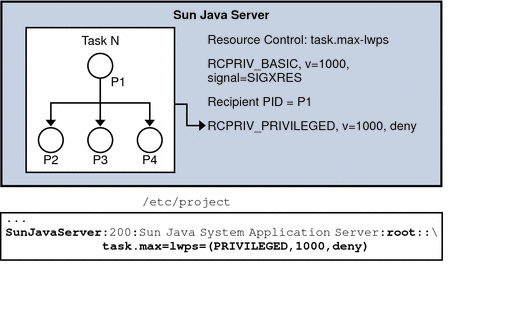

Previous
Previous
Resource Control Code Examples
Master Observing Process for Resource Controls
The following example is the master observer process. Figure 5-3 shows the resource controls for the master observing process.
Note - The line break is not valid in an /etc/project file. The line break is shown here only to allow the example to display on a printed or displayed page. Each entry in the /etc/project file must be on a separate line.
Figure 5-3 Master Observing Process
The key points for the example include the following:
Because the task's limit is privileged, the application cannot change the limit, or specify an action, such as a signal. A master process solves this problem by establishing the same resource control as a basic resource control on the task. The master process uses the same value or a little less on the resource, but with a different action, signal = XRES. The master process creates a thread to wait for this signal.
The rctlblk is opaque. The struct needs to be dynamically allocated.
Note the blocking of all signals before creating the thread, as required by sigwait(2).
The thread calls sigwait(2) to block for the signal. If sigwait() returns the SIGXRES signal, the thread notifies the master process' children, which adapts to reduce the number of LWPs being used. Each child should also be modelled similarly, with a thread in each child, waiting for this signal, and adapting its process' LWP usage appropriately.
rctlblk_t *mlwprcb;
sigset_t smask;
/* Omit return value checking/error processing to keep code sample short */
/* First, install a RCPRIV_BASIC, v=1000, signal=SIGXRES rctl */
mlwprcb = calloc(1, rctlblk_size()); /* rctl blocks are opaque: */
rctlblk_set_value(mlwprcb, 1000);
rctlblk_set_privilege(mlwprcb, RCPRIV_BASIC);
rctlblk_set_local_action(mlwprcb, RCTL_LOCAL_SIGNAL, SIGXRES);
if (setrctl("task.max-lwps", NULL, mlwprcb, RCTL_INSERT) == -1) {
perror("setrctl");
exit (1);
}
/* Now, create the thread which waits for the signal */
sigemptyset(&smask);
sigaddset(&smask, SIGXRES);
thr_sigsetmask(SIG_BLOCK, &smask, NULL);
thr_create(NULL, 0, sigthread, (void *)SIGXRES, THR_DETACHED, NULL));
/* Omit return value checking/error processing to keep code sample short */
void *sigthread(void *a)
{
int sig = (int)a;
int rsig;
sigset_t sset;
sigemptyset(&sset);
sigaddset(&sset, sig);
while (1) {
rsig = sigwait(&sset);
if (rsig == SIGXRES) {
notify_all_children();
/* e.g. sigsend(P_PID, child_pid, SIGXRES); */
}
}
}List all the Value-Action Pairs for a Specific Resource Control
The following example lists all the value-action pairs for a specific resource control, task.max-lwps. The key point for the example is that getrctl(2) takes two resource control blocks, and returns the resource control block for the RCTL_NEXT flag. To iterate through all resource control blocks, repeatedly swap the resource control block values, as shown here using the rcb_tmp rctl block.
rctlblk_t *rcb1, *rcb2, *rcb_tmp;
...
/* Omit return value checking/error processing to keep code sample short */
rcb1 = calloc(1, rctlblk_size()); /* rctl blocks are opaque: */
/* "rctlblk_t rcb" does not work */
rcb2 = calloc(1, rctlblk_size());
getrctl("task.max-lwps", NULL, rcb1, RCTL_FIRST);
while (1) {
print_rctl(rcb1);
rcb_tmp = rcb2;
rcb2 = rcb1;
rcb1 = rcb_tmp; /* swap rcb1 with rcb2 */
if (getrctl("task.max-lwps", rcb2, rcb1, RCTL_NEXT) == -1) {
if (errno == ENOENT) {
break;
} else {
perror("getrctl");
exit (1);
}
}
}Set project.cpu-shares and Add a New Value
The key points of the example include the following:
This example is similar to the example shown in Set pool.comment Property and Add New Property.
Use bcopy(), rather than buffer swapping as in List all the Value-Action Pairs for a Specific Resource Control.
To change the resource control value, call setrctl() with the RCTL_REPLACE flag. The new resource control block is identical to the old resource control block except for the new control value.
rctlblk_set_value(blk1, nshares); if (setrctl("project.cpu-shares", blk2, blk1, RCTL_REPLACE) != 0)
The example gets the project's CPU share allocation, project.cpu-shares, and changes its value to nshares.
/* Omit return value checking/error processing to keep code sample short */
blk1 = malloc(rctlblk_size());
getrctl("project.cpu-shares", NULL, blk1, RCTL_FIRST);
my_shares = rctlblk_get_value(blk1);
printout_my_shares(my_shares);
/* if privileged, do the following to */
/* change project.cpu-shares to "nshares" */
blk1 = malloc(rctlblk_size());
blk2 = malloc(rctlblk_size());
if (getrctl("project.cpu-shares", NULL, blk1, RCTL_FIRST) != 0) {
perror("getrctl failed");
exit(1);
}
bcopy(blk1, blk2, rctlblk_size());
rctlblk_set_value(blk1, nshares);
if (setrctl("project.cpu-shares", blk2, blk1, RCTL_REPLACE) != 0) {
perror("setrctl failed");
exit(1);
} Set LWP Limit Using Resource Control Blocks
In the following example, an application has set a privileged limit of 3000 LWPs that may not be exceeded. In addition, the application has set a basic limit of 2000 LWPs. When this limit is exceeded, a SIGXRES is sent to the application. Upon receiving a SIGXRES, the application might send notification to its child processes that might in turn reduce the number of LWPs the processes use or need.
/* Omit return value and error checking */
#include <rctl.h>
rctlblk_t *rcb1, *rcb2;
/*
* Resource control blocks are opaque
* and must be explicitly allocated.
*/
rcb1 = calloc(rctlblk_size());
rcb2 = calloc(rctlblk_size());
/* Install an RCPRIV_PRIVILEGED, v=3000: do not allow more than 3000 LWPs */
rctlblk_set_value(rcb1, 3000);
rctlblk_set_privilege(rcb1, RCPRIV_PRIVILEGED);
rctlblk_set_local_action(rcb1, RCTL_LOCAL_DENY);
setrctl("task.max-lwps", NULL, rcb1, RCTL_INSERT);
/* Install an RCPRIV_BASIC, v=2000 to send SIGXRES when LWPs exceeds 2000 */
rctlblk_set_value(rcb2, 2000);
rctlblk_set_privilege(rcb2, RCPRIV_BASIC);
rctlblk_set_local_action(rcb2, RCTL_LOCAL_SIGNAL, SIGXRES);
setrctl("task.max-lwps", NULL, rcb2, RCTL_INSERT);Programming Issues Associated With Resource Controls
Consider the following issues when writing your application:
The resource control block is opaque. The control block needs to be dynamically allocated.
If a basic resource control is established on a task or project, the process that establishes this resource control becomes an observer. The action for this resource control block is applied to the observer. However, some resources cannot be observed in this manner.
If a privileged resource control is set on a task or project, no observer process exists. However, any process that violates the limit becomes the subject of the resource control action.
Only one action is permitted for each type: global and local.
Only one basic rctl is allowed per process per resource control.